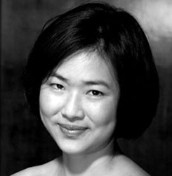

Guest Artists
Adam Lopez
Vocals
Adam Lopez’s exceptional vocal artistry has paved opportunities to perform backing vocals for some of the biggest names in the music industry such as Mariah Carey, Keith Urban and The Coors. His most recent noted collaboration was headlining with Australian Jazz legend James Morrison in a string of Symphonic Concerts in Perth, Hobart and Brisbane.
His discography includes an eclectic collection of genres spanning from Pop-Opera, Pop, Rhythm & Blues, Jazz, Power Ballads and Fiery Latin!
His phenomenal vocal range smashed two Guinness World Records (one note above the range of a piano!)
This achievement has astounded audiences from all around the world leading him to perform and appear on international television and radio stations in Japan, Spain, Italy, Korea, Hong Kong and the USA.
Adam Lopez has undoubtedly got one of the most fascinating vocal instruments on the planet. He delighted audiences when he sang in Townsville with the Barrier Orchestra in 2012 along with Sean O’Boyle and James Morrison.
Blair Harris
Cello

DESCRIPTION NOT AVAILABLE
David Hudson
Musician/Entertainer
Domenico is one of Brisbane’s most experienced and versatile multicultural entertainers. He has performed in almost every possible style since he commenced his musical career in 1971 at age 4. He studied music on the traditional European instrument called the Piano Accordion and this is still his chosen instrument, although he also now uses the latest electronic midi accordion which incorporates other built in instruments.
Domenico moved from three piece cabaret bands to a more sophisticated five piece band, the Latin Mafia which performs swing and Latin classics from the Rat Pack era.
He has performed in many venues from QPAC with the Queensland Pops Orchestra to being runners up with his Celtic Band, Murphy’s Pigs at the Tamworth Golden Fiddle Awards.
He performs a diverse range of musical styles from around the world and will be a great asset to our World Music Concert.
2015 has taken David to Turkey, Italy, France and the United Kingdom with private and public performances and now brings him to Townsville.
Domenico Taraborrelli
Accordion

Domenico is one of Brisbane’s most experienced and versatile multicultural entertainers. He has performed in almost every possible style since he commenced his musical career in 1971 at age 4. He studied music on the traditional European instrument called the Piano Accordion and this is still his chosen instrument, although he also now uses the latest electronic midi accordion which incorporates other built in instruments.
Domenico moved from three piece cabaret bands to a more sophisticated five piece band, the Latin Mafia which performs swing and Latin classics from the Rat Pack era.
He has performed in many venues from QPAC with the Queensland Pops Orchestra to being runners up with his Celtic Band, Murphy’s Pigs at the Tamworth Golden Fiddle Awards.
James Morrison
Trumpet

DESCRIPTION NOT AVAILABLE
Jennifer Bradstreet
Flute

Jennifer Bradstreet completed a Bachelor of Music with Honours at the Sydney Conservatorium, before taking up a summer scholarship at St Andrews and Oxford in the UK, and then moving to London in 2010. She became a student at the Royal College of Music under British flautist Susan Milan, and graduated with a Postgraduate Diploma of Performance in 2011.
While in London, she played in side-by-side projects with the London Symphony and was invited onto the prestigious BBC Symphony Orchestral pathway. Many summer scholarships and international master-classes followed, in Germany, England and Italy.
In 2013, Jennifer accepted a Masters scholarship under James Kortum and Aldo Baerten (Belgium) at the Sydney Conservatorium, where she will complete her studies this year. She was a finalist in the 2013 Australian Flute Festival Orchestral Flute Competition and first-prize winner in the 2014 Australian Concerto & Vocal Competition (all instruments). She is active as a soloist and chamber musician, and also performs regularly with the Australian Opera and Ballet Orchestra in Sydney, with whom she has freelanced since 2013.
Ji Won Kim
Violin
DESCRIPTION NOT AVAILABLE
Leah Li
Harp

Townsville based harpist Leah Xiang Li enjoys a diverse career as an orchestral and chamber musician, soloist, instrumental teacher and primary school language teacher.
Leah graduated from the Queensland Conservatorium Griffith University under the tutelage of Sebastien Lipman. She was the recipient of Ross Peters 4MBS Chamber Music Prize and performed for the Honourable Dame Quentin Bryce (former Governor-General of Australia). She was also the principal harpist for Australian International Symphony Orchestra Institution, Queensland Youth Symphony Orchestra, Queensland Conservatorium Symphony Orchestra and Queensland Conservatorium Opera Orchestra.
Leah‘s repertoire spans from the Baroque to the present day. She has a special interest in Jazz and is seeking to fulfil this passion through further study. Leah is also dedicated to education, community outreach and musical advocacy as demonstrated by her current involvement in Barrier Reef Orchestra.
Rebecca Chan
Volin
DESCRIPTION NOT AVAILABLE
Stefan Cassomenos
Piano

Melbourne pianist, conductor and composer Stefan Cassomenos gives regular solo recitals throughout Australia, and has appeared as a soloist in Europe and Asia.
In 2012 he was a grand finalist in the Rhodes International Piano Competition, and his recording of English and Australian art song with tenor Christopher Saunders was named the ABC Classic FM CD of the Week in September 2012.
He is well known for performances of chamber music and art song, and he was a grand finalist and prize-winner at both the Trieste International Chamber Music Competition and the Melbourne Asia-Pacific Chamber Music Competition in 2009. He was recently awarded the 2012 Young Achievement Award by the Hellenic Australian Chamber of Commerce and Industry.Suzanne Kompass holds a Bachelor Of Music degree in vocal performance from WESTMINSTER CHOIR COLLEGE in Princeton, New Jersey and a diploma in operatic performance from the UNIVERSITY OF TORONTO.
She lives in New York but spends part of each year in Australia.
Her operatic experience is extensive and her repertoire includes the roles of Susanna in THE MARRIAGE OF FIGARO, Mimi in LA BOHEME and Adele in DIE FLEDERMAUS. She has appeared as Hanna Glawari in THE MERRY WIDOW, Lisa in THE LAND OF SMILES and Violetta in LA TRAVIATA all with the VANCOUVER SYMPHONY. For OPERA YORK in Toronto she has sung Marguerite in FAUST and the title role in MANON. For TORONTO OPERA LAB she has appeared as Pamina in THE MAGIC FLUTE, and for TORONTO OPERETTA THEATRE she has sung the title role of LINDA DI CHAMOUNIX, Lisa in THE COUNTESS MARITZA, Gabriella in LA VIE PARISIENNE, the role of Marie in Albert Lortzing’s ZAR UND ZIMMERMAN and the title role in Emilio Arrieta’s opera, MARINA. She has appeared, at the invitation of Gian Carlo Menotti, in performances of his opera, JUANA LA LOCA and of Gluck’s L’Ivrogne Corrige at the SPOLETO FESTIVAL in both Spoleto, Italy and in Charleston, South Carolina.
Yoshika Masuda
Cello

Born in Kobe, Japan, Yoshika Masuda first started to play the cello at the age of five. Following studies with George Pedersen in Australia, he went onto study at the Royal Northern College of Music in Manchester on a full scholarship. Yoshika was recently awarded first prize at both the Australian Concerto & Vocal Competition and the YMF National Debut Concerto Competition, and is also the winner of the Yamaha Music Foundation of Europe String Award. He has also won top prizes at the Sydney Cello Award, Australian National Youth Concerto Competition and the J A Beare International Solo Bach Competition. Yoshika has performed concertos and recitals throughout Australia, Austria, France, Italy, Japan, the UK and USA.
Yoshika gained his Bachelor of Music with first class honours from the RNCM, receiving both the Sir John Munduell Principals’s Prize and the Leonard Rose Cello Award for outstanding achievement. He also completed his Master of Music at the RNCM with distinction the following year.
Yoshika is currently continuing his studies in Los Angeles as a Doctorate student. Yoshika’s cello is a fine Carl Becker model (1930), loaned to him from a private foundation.